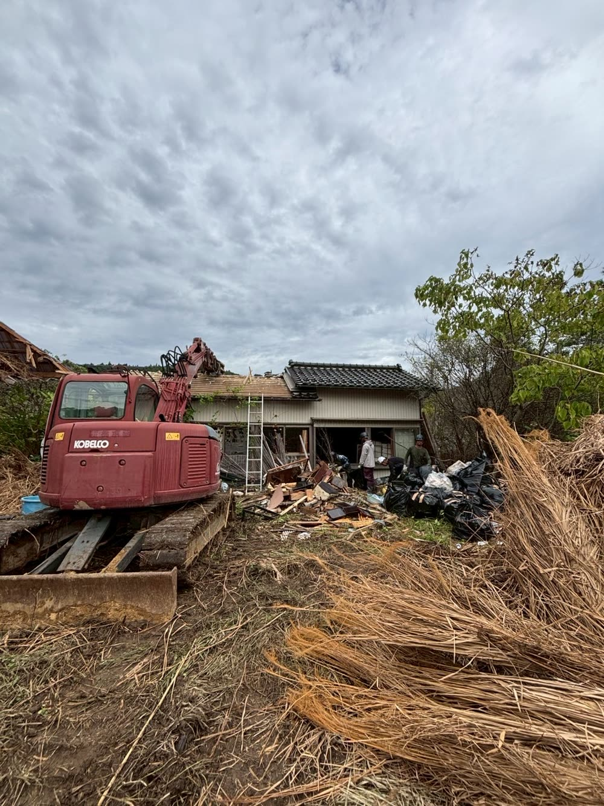

実家の空き家・相続した建物の解体を、近隣への配慮を徹底しながら安全に施工します。 アスベスト事前調査・補助金活用にも対応。30秒の無料見積もりフォームから今すぐご相談いただけます。

「実家が空き家になって管理できない」「相続した建物をどうすればいいか」 そのようなお悩みを持つ個人のお客様から、多くのご相談をいただいています。
義翔工業は木造住宅・アパート・倉庫など、さまざまな建物の解体実績を持つ専門チームです。 解体の前後まで責任をもって対応します。
建物の大きさや構造、立地によって費用は変わります。まずは無料でお見積りをご案内します。
ご相談いただければ、現地調査から行政手続きまで、必要なステップをわかりやすくご案内します。
防音・防塵対策や事前のご挨拶など、近隣トラブルを防ぐための配慮を徹底しています。
空き家解体に使える補助金制度の活用についても、可能な範囲でサポートします。
電話・フォームからご連絡ください
担当者が現場を確認（無料）
費用・期間を明確にご提示
内容にご納得いただいてから
解体届・補助金申請を代行
近隣への配慮を徹底して施工
建物の規模・構造・立地によって異なります。木造一般住宅（30〜40坪）の目安は150〜250万円程度ですが、 補助金を活用することで費用を抑えることが可能です。まずは無料現地調査・お見積もりをご利用ください。
はい、現地調査・お見積りは無料です。お気軽にご相談ください。
はい、事前調査に対応しています。石綿含有が確認された場合は法令に基づいた適切な除去・処分を行います。
自治体によって空き家解体補助金制度があります。対象となるかの確認から申請手続きまでサポートします。 まずはお気軽にご相談ください。
一般的な木造住宅で1〜2週間程度です。建物の規模・構造によって変わりますので、 現地調査後に詳しくご案内します。
FREE CONSULTATION
費用・期間・補助金など、どんなことでもお答えします。
相談・お見積もりは無料です。下記のフォームからお気軽にどうぞ。
お電話でのご相談も承っております。TEL：0827-35-6635